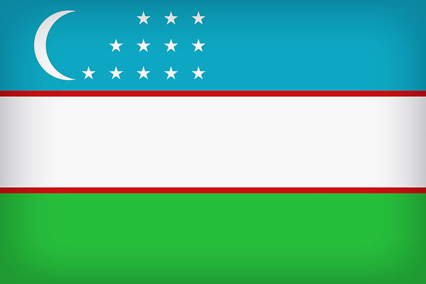

Узбекистан (официально: Республика Узбекистан) - государство в Центральной Центральной Азии. Столица Узбекистана - Ташкент, государственный язык - узбекский. Площадь - 448 978 [4] км2. Население (2020 г.) - 34 011 621 [5]. Валюта - сум. Республика Узбекистан состоит из 12 областей, города Ташкента и Республики Каракалпакстан и является независимым, демократическим, светским и правовым государством. Узбекистан является членом СНГ, ООН, ОБСЕ и ШОС. В Узбекистане пять стран, не имеющих выхода к морю: Казахстан на севере; Кыргызстан на северо-восток; Таджикистан с юго-востока; Афганистан на юге; и граничит с Туркменистаном на юго-западе. Экономика Узбекистана постепенно переходит к рыночной экономике, а его внешнеторговая политика основана на импортозамещении. В сентябре 2017 года валюта страны полностью конвертируется по рыночному курсу. Узбекистан является крупным производителем и экспортером хлопкового волокна. В стране также находится крупнейший в мире золотой рудник. Узбекистан стал крупнейшим производителем электроэнергии в Центральной Азии с огромными мощностями по выработке электроэнергии советских времен и поставками природного газа.
Существует несколько гипотез происхождения узбекского этнонима. Первое упоминание узбекского слова как личного имени относится к XII веку. Слово узбек возникло среди тюркских племен в Мовароуннахре до прихода монголов в 13 веке. Арабский историк XII века Усама ибн Мункиз в своей «Книге просвещения» утверждает, что один из лидеров периода сельджуков (1115–1116 гг.) Был правителем Мосула Эмир Узбек. По словам историка Рашид ад-Дина, последним представителем династии Ильдегизов, правившей в Тебризе, был Узбек Музаффар (1210–1225) [7]. [8] Историк Мутал Ирматов предположил, что узбекское слово происходит от имени «Озлар» [9] Доктор исторических наук, профессор Р.Г. Мукминова предоставила дополнительные доказательства против увязывания этнического названия узбеков с именем узбекского хана. Шарофиддин Али Язди сообщает о событиях 1289 года, задолго до правления узбекского хана, и упоминает набег узбекских войск в Тебриз. [10] По мнению других историков, в 1960-х годах в Дашти-Кипчакском районе образовался союз кочевых тюркских племен под названием узбеки. В 1960-е годы этноним «узбек» стал собирательным названием всего тюркского населения восточного Дашти-Кипчака. Этноним «узбек» пришел в Мовароуннахр во времена правления Амира Темура. Великий поэт Алишер Навои (1441–1501) упоминал этноним «узбек» в Хорасане и Мовароуннахре.
Культурные и социальные отношения в Узбекистане имеют давнюю историю. Среди средств массовой информации (более 1300) - Национальная телерадиокомпания Узбекистана, региональные телерадиокомпании, FM-радиостанции, государственные газеты, а также Интернет-ресурсы. Благодаря переходу на цифровые технологии телерадиоиндустрия в Узбекистане быстро развивалась.
 Государственный флаг утвержден Законом Республики Узбекистан от 18 ноября 1991 года № 407XII «О Государственном флаге Республики Узбекистан». Государственный Флаг Республики Узбекистан представляет собой ткань прямоугольной формы, состоящую из трех полос синего, белого и темно-зеленого цветов по всей длине флага. Государственный флаг Республики Узбекистан имеет длину 250 сантиметров и ширину 125 сантиметров. Ширина синего, белого и зеленого цветов одинакова. Каждый равен 40 дюймам в ширину. В центре государственного флага Республики Узбекистан - красные каймы шириной 2,5 сантиметра. На лицевой и оборотной сторонах голубого флага в верхней части Государственного Флага Республики Узбекистан, у полюса, изображено белое новолуние и рядом с ним двенадцать белых пятиконечных звезд. Изображение новой белой луны и двенадцати белых пятиконечных звезд расположено в прямоугольнике 70х30 см в середине синего верха. Белая новая луна находится в вертикальном положении со стороной гребня, обращенной к полюсу, на расстоянии 20 см от полюса, и может поместиться в круг диаметром 30 см. Двенадцать белых пятиконечных звезд вписываются в круг диаметром 6 сантиметров. Расстояние между кругами - 6 сантиметров. Звезды расположены продольно и вертикально в следующем порядке: три звезды в верхнем ряду, четыре звезды в среднем ряду и пять звезд в нижнем ряду. Звезды в нижнем ряду расположены в 3,5 сантиметрах от нижнего конца новолуния.
Государственный Герб Республики Узбекистан - официальный государственный символ Республики Узбекистан. Принят 2 июля 1992 г. Государственный герб - один из символов государственной независимости.
 Государственный герб имеет круглую форму, на левой стороне которого изображен символ нашей еды - колосья пшеницы, а на правой стороне - бесценное сокровище, несущее миру славу узбекского народа, - хлопковые ветки с открытыми чашами. В то же время это означает, что Узбекистан - солнечная страна. Вверху герба изображена восьмиугольная звезда как символ свободы Узбекистана, внутри нее - полумесяц и звезда, означающие, что большинство населения - мусульмане, а в центре - птица Хумо с крыльями как символ. счастья и свободы. Внизу герба на ленте, изображающей государственный флаг Республики Узбекистан, начертано слово «Узбекистан».
Государственный герб имеет круглую форму, на левой стороне которого изображен символ нашей еды - колосья пшеницы, а на правой стороне - бесценное сокровище, несущее миру славу узбекского народа, - хлопковые ветки с открытыми чашами. В то же время это означает, что Узбекистан - солнечная страна. Вверху герба изображена восьмиугольная звезда как символ свободы Узбекистана, внутри нее - полумесяц и звезда, означающие, что большинство населения - мусульмане, а в центре - птица Хумо с крыльями как символ. счастья и свободы. Внизу герба на ленте, изображающей государственный флаг Республики Узбекистан, начертано слово «Узбекистан».
Текст и музыка Государственного гимна Республики Узбекистан утверждены Законом Республики Узбекистан от 10 декабря 1992 г. № 768 XII «О Государственном гимне Республики Узбекистан».
Текст гимна (Перевод):
Светлый край свободный, общий наш успех,
Ты спасительный друг и спутник, милосерден для всех!
Созидания путь, мудрости оплот,
Славой ты воссияй, пока мир живёт!
Злато долин – родной мой Узбекистан,
Предков мощь, слава их навсегда с тобой!
Дух великих людей нам по праву дан,
Очарован весь свет этою землёй!
Веры жив твой светоч, щедрый мой народ.
Молодых поколений воля, как крыло, нас несёт!
Независимый край, мирная стезя,
Правдой ты расцветай, родина моя!
Злато долин – родной мой Узбекистан,
Предков мощь, слава их навсегда с тобой!
Дух великих людей нам по праву дан,
Очарован весь свет этою землёй!